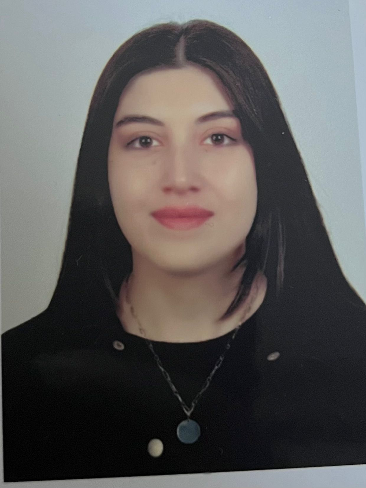

Etik değerlere bağlı, empatik ve sorumluluk bilinciyle psikolojik danışmanlık süreçlerini yürüten ruh sağlığı profesyoneli.
İletişime Geç
İstanbul Atlas Üniversitesi Psikoloji Bölümü'nden 2025 yılında mezun oldum. Lisans eğitimim süresince edindiğim teorik bilgileri, çeşitli hastane ve danışmanlık merkezlerinde yürüttüğüm gözlem ve uygulamalarla pekiştirme fırsatı buldum.
İstanbul Üniversitesi Cerrahpaşa Tıp Fakültesi, Prof. Dr. Murat Dilmener Hastanesi ve Medicine Hospital gibi kurumlarda vaka takibi, seans gözlemi ve psikoeğitim süreçlerine aktif olarak katıldım. Psikoloji Kulübü'nde üstlendiğim görevlerle akademik etkinliklerin planlanmasında yer aldım ve sosyal sorumluluk projeleriyle gönüllü deneyimler kazandım.
Özellikle Bilişsel Davranışçı Terapi (BDT) alanında yetkinleşmek üzere Prof. Dr. Hakan Türkçapar'dan eğitim almaktayım. Etik değerlere bağlı, empatik ve sorumluluk sahibi bir psikoloji mezunu olarak mesleki gelişimime devam ediyorum.
Psikiyatrist eşliğinde vaka takibi, seans gözlemi ve tanı-tedavi süreçlerinin gözlemlenmesi. Psikiyatrik hastalıkların klinik izlemi ve multidisipliner ekip yapısına dair temel kazanımlar.
Yataklı Psikiyatri Servisinde vizit süreçlerine katılım. Psikiyatrik tanıların izlenmesi, hasta-hekim etkileşimleri ve tedavi yaklaşımlarına dair gözlemsel deneyim.
Çocuk, ergen ve yetişkinlerle sürdürülen terapi süreçlerinin gözlemlenmesi. Seans öncesi ve sonrası vaka değerlendirmeleri ile danışan süreci takibi.
Sağlık kurumlarında organizasyonel işleyişe ve departmanlar arası koordinasyona yönelik süreçlerin gözlemlenmesi.
Danışmanlık süreçleri veya sorularınız için aşağıdaki iletişim kanallarından bana ulaşabilirsiniz.
📞 Telefon: 0553 565 24 74
✉️ E-posta: psk.iremnazdoganay@gmail.com